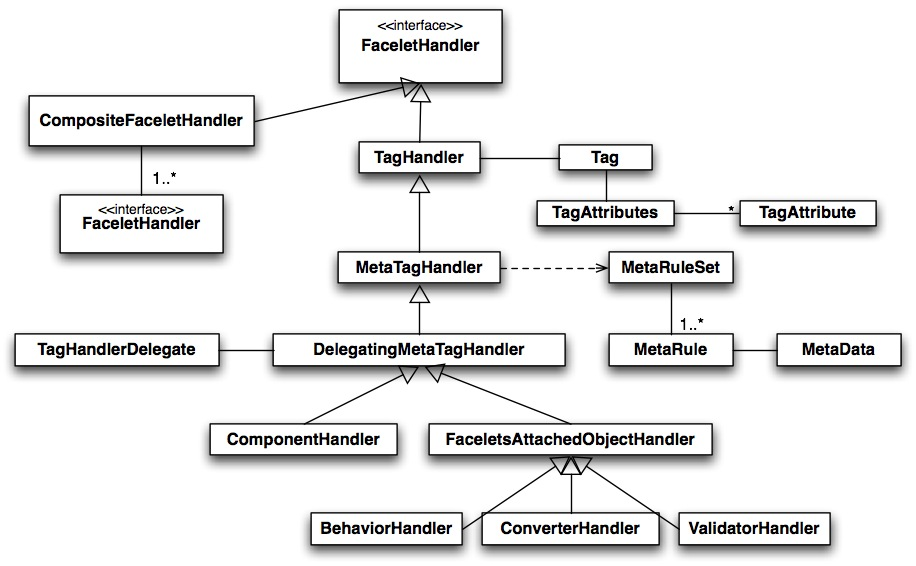

|
|||||||||
| PREV PACKAGE NEXT PACKAGE | FRAMES NO FRAMES | ||||||||
This package contains public classes for the Java code API of Facelets.
See:
Description
| Interface Summary | |
|---|---|
| AttributeHandler | An interface that allows other code to identify FaceletHandlers that correspond to component attributes. |
| BehaviorConfig | Convey the id of a behavior declared in a view. |
| ComponentConfig | Passed to the constructor of |
| ConverterConfig | A Facelet version of the JSP |
| FaceletHandler | This is the root class for markup elements in Facelets VDL. |
| FacetHandler | An interface that allows other code to identify FaceletHandlers that correspond to component facets. |
| TagConfig | Passed to the constructor of |
| TagDecorator | Provides the ability to completely change the Tag before it's processed for compiling with the associated TagHandler. |
| TextHandler | An interface that allows other code to identify FaceletHandlers that may provide text (String) content. |
| ValidatorConfig | Used in creating |
| Class Summary | |
|---|---|
| BehaviorHandler | The |
| ComponentHandler | Public base class for markup element
instances that map to |
| CompositeFaceletHandler | A FaceletHandler that is derived of 1 or more, inner FaceletHandlers. |
| ConverterHandler | Handles setting a |
| DelegatingMetaTagHandler | Enable the JSF implementation to provide
the appropriate behavior for the kind of |
| FaceletContext | Context representative of a single request from a Facelet. |
| FaceletsAttachedObjectHandler | Root class for all tag handlers that represent attached objetcts in a Facelets page. |
| Metadata | There are concrete subclasses within the implementation that map concepts in the Facelet VDL page to JSF Java API calls the appropriate instances. |
| MetadataTarget | Information used with |
| MetaRule | The root class of the abstraction that dictates how attributes on a markup element in a Facelets VDL page are wired to the JSF API object instance associated with that element. |
| MetaRuleset | A mutable set of rules to be used in auto-wiring state to a particular object instance. |
| MetaTagHandler | Every kind of markup element in Facelets VDL that has attributes that need to take action on a JSF Java API artifact is associated with an instance of this class. |
| ResourceResolver | Provide a hook to decorate or override the way that Facelets loads template files. |
| Tag | The runtime must create an instance of this class for each element in the Facelets XHTML view. |
| TagAttribute | Representation of an XML attribute name=value pair on an XML element in a Facelet file. |
| TagAttributes | A set of TagAttributes, usually representing all attributes on a Tag. |
| TagHandler | Foundation class for
|
| TagHandlerDelegate | Abstract class that defines methods relating to helping tag handler instances. |
| TagHandlerDelegateFactory | Abstract factory for creating instances
of |
| ValidatorHandler | Handles setting a |
| Exception Summary | |
|---|---|
| FaceletException | An Exception from the Facelet implementation |
| TagAttributeException | An Exception caused by a |
| TagException | An Exception caused by a |
This package contains public classes for
the Java code API of Facelets. The vast majority of Facelets users have
no need to access the Java API and can get all their work done using the
tag-level API. These classes are provided for users that have a need
for a Java API that allows participation in the execution of a Facelets
View, which happens as a result of the runtime calling ViewDeclarationLanguage.buildView().

The most common usecase for participating in the execution of a
Facelets View is to provide a custom tag handler in those cases when the
non-Java API methods for doing so is not sufficient. In such cases,
Java classes may extend from ComponentHandler, BehaviorHandler, ConverterHandler, or ValidatorHandler depending upon
the kind of JSF Java API artifact they want to represent in the Facelets
VDL page.
|
|||||||||
| PREV PACKAGE NEXT PACKAGE | FRAMES NO FRAMES | ||||||||